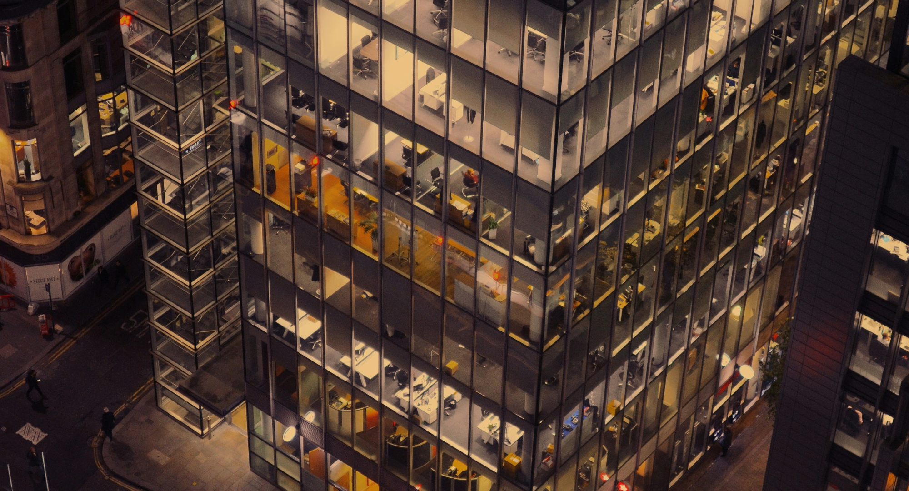

Home > 기술혁신 > 토목건축연구소
토목건축연구소
Think of the people and nature

Construct R&D
기술혼을 담아
기술 선진국의 꿈을 실현합니다.
금호건설의 토목건축연구소는 인명과 구조물 보호, 공기 단축을 위한 시공법 개발과
친환경 건설 사업 기술을 개발하고 있습니다.
면진시스템, PC공법, 초고층 아파트 시스템 개발, 대공간 구조물,
자가치유형 및 폐타이어 이용 방수 공법, 에너지절약형 다기능성 외피 시스템